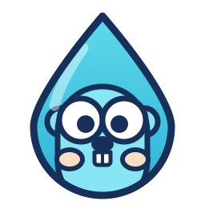

GoDrop
Upload a file, get a hard-to-guess URL.
Written in Go: one binary, no database.
Install
curl -fsSL https://godrop.sh/install.sh | sh
The script verifies the release checksum before installing anything, then
hands over to godrop init, which writes the configuration,
creates your first token and checks that the internet can actually reach
your server.
Use it
1 Upload, with a token
curl -X POST -H "Authorization: Bearer $GODROP_TOKEN" \
-F "file=@photo.jpg" https://files.example.com/uploadand back comes the URL
{
"url": "https://files.example.com/f/20260815-143022-8f4e…/photo.jpg",
"files": [{ "name": "photo.jpg", "size": 12345, "mime": "image/jpeg" }]
}2 Share it, no token needed
curl -O https://files.example.com/f/20260815-143022-8f4e…/photo.jpgThe 128 random bits in the name are the only key. Anyone with the link can read it; nobody can find it by guessing.
3 Delete it when you are done
curl -X DELETE -H "Authorization: Bearer $GODROP_TOKEN" \
https://files.example.com/f/20260815-143022-8f4e…/photo.jpg
Or set GODROP_RETENTION=30d and let it clean up after
itself.
What it does
--json; the server serves /llms.txt.godrop doctor checks storage, firewall, TLS and reachability.For AI agents
Give an agent two values, a base URL and a token, and it can work out the rest by itself. Every instance describes its own API, with the limits that instance actually enforces:
curl https://files.example.com/llms.txt # the whole API in plain text
curl https://files.example.com/openapi.yaml # machine-readable schemaThis site has one too, describing the project rather than an instance: godrop.sh/llms.txt.
There is a ready-made agent skill, which GoDrop installs itself:
godrop skill install --scope user
# or, for any of the other agents:
gh skill install fatihbaltaci/GoDrop godrop --scope userRun it anywhere
- Docker:
docker run -v godrop-data:/data ghcr.io/fatihbaltaci/godrop - A plain VPS: one binary and a hardened systemd unit
- Fly.io, Railway, Render: ready-made manifests, each with a volume